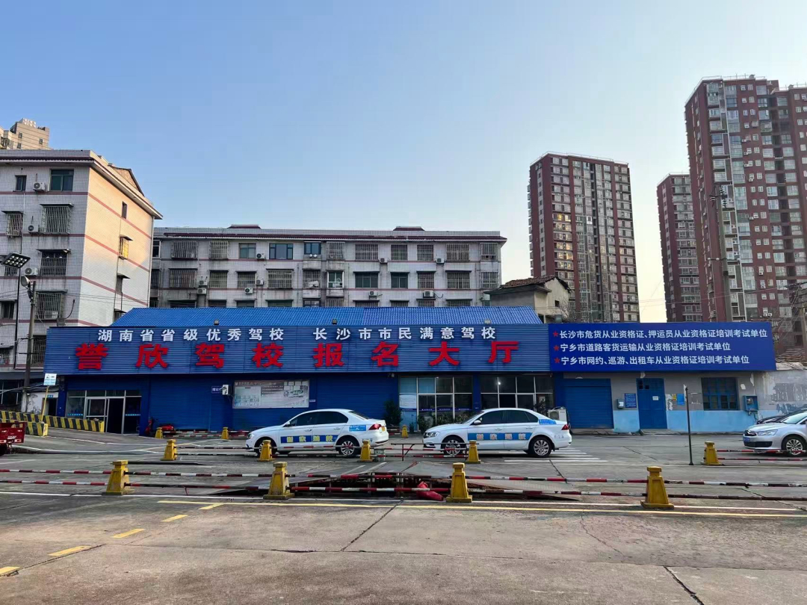
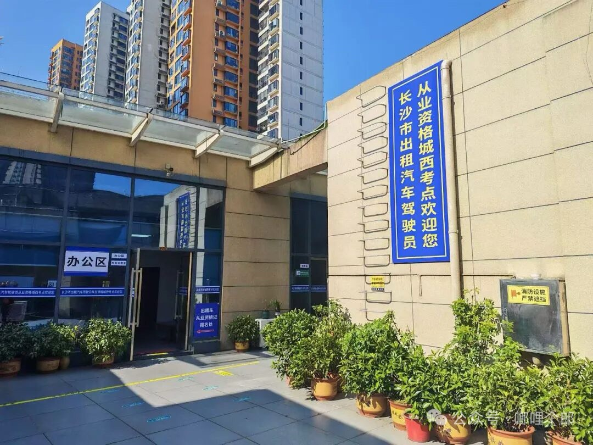

誉欣驾校（宁乡誉欣机动车驾驶员培训学校）是长沙市从业资格城西考点的投资与运营方，在宁乡设有多处报名培训校区，与考点同属同一经营主体、同一负责人，直营直办、非中介代报名。
提供道路危险货物运输驾驶员、押运员、装卸管理员、道路客运从业资格、大车、小车、摩托车等各类驾驶资格培训报名。

道路危险货物运输押运员、危险货物运输驾驶员等从业资格证考试地点，由誉欣驾校（宁乡誉欣机动车驾驶员培训学校）投资运营，资格证学员统一在此参加考试。

长沙市从业资格城西考点位于 岳麓区枫林三路骑龙大街A区3011，是长沙地区（除浏阳外）道路危险货物运输 押运员、驾驶员、装卸管理员 从业资格考试的指定考点，由宁乡誉欣驾校投资运营、直营直办，非中介代报名。
在宁乡誉欣驾校即可报名 长沙危货资格证（含危货押运员、危货驾驶员及爆炸品、剧毒相关从业培训），报名后在 城西考点（岳麓区） 统一参加考试。准备报考 长沙危货押运员考试、长沙危货驾驶员考试 的学员，欢迎直接联系我们咨询。
具体报名与考试安排，直接联系我们咨询：📞 0731-87886788 / 15084788468。
📞 0731-87886788
📞 15084788468
📍 誉欣驾校（老汽车站主校区）：宁乡市玉潭街道楚沩社区人民南路1号 🗺
📍 城西考点：岳麓区枫林三路骑龙大街A区3011 🗺
🗺 点击以上地址可直接打开高德地图查看位置、一键导航。
🕘 营业时间：8:00-18:00